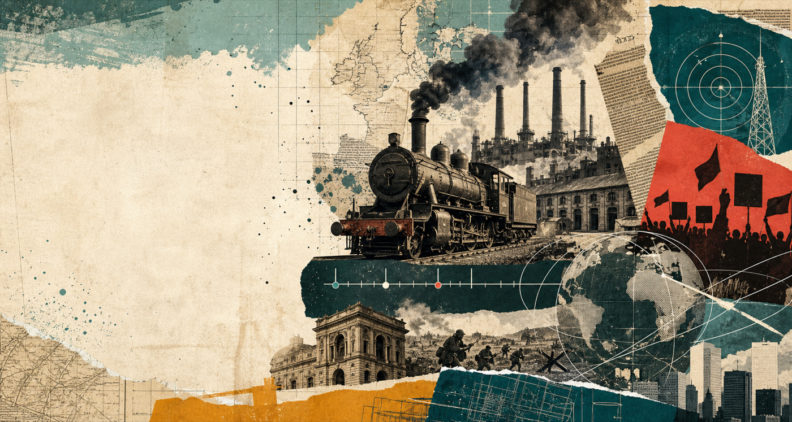

4 bloke historiko gidatuak
Bloke bakoitzean ideia nagusia, 5 kontzeptu, kausa-ondorio eskema eta galdera labur bat landuko dituzu.

Udako Historia lana
Ez da Historia osoa buruz ikastea. Helburua da prozesu nagusiak ulertzea, denboran kokatzea eta zure hitzekin defendatzeko moduan antolatzea.
Lehenik, garai bakoitza denboran eta espazioan jarri.
Ondoren, kontzeptuak zure hitzekin definitu eta adibideekin lotu.
Kausa-ondorioak, jarraitutasunak eta hausturak bilatu.
Azkenik, lana ahoz azaldu dokumentua irakurri gabe.
1. lana zertan datza
Ez da informazio asko pilatzea. Baloratuko dena da ideia nagusiak argi azaltzea, prozesuak denboran kokatzea, kausak eta ondorioak bereiztea, eta kontzeptuen arteko loturak egitea.
Bloke bakoitzean ideia nagusia, 5 kontzeptu, kausa-ondorio eskema eta galdera labur bat landuko dituzu.
Kontzeptu bakoitza definitu, denboran eta espazioan kokatu, adibide batekin azaldu eta gaur egungo munduarekin lotuko duzu.
500-700 hitzeko testu batean gaur egungo mundua ulertzeko hiru prozesu historiko garrantzitsuenak justifikatuko dituzu.
2. A atala
Bloke bakoitzak egitura bera izango du. Erantzunak laburrak baina zehatzak izan behar dira: ideia nagusia 5-8 lerrotan eta galdera laburra 15-20 lerrotan.
XVIII-XIX. mendeak
Zer aldaketa historiko nagusi gertatu zen ekoizteko moduan, lan egiteko eran, hirietan eta klase sozialen antolaketan?
XIX. mendea
Nola aldatu ziren boterea, herritartasuna, nazioa eta langileen eskubideen aldeko borroka XIX. mendean?
1870-1918
Nola lotu ziren Europako potentzien lehia, kolonialismoa, gerra totala eta iraultza politiko-soziala?
1919-1947
Zergatik ahuldu ziren demokrazia liberalak eta nola sortu zen mundu bipolarraren hasiera?
3. B atala
Giltza bakoitzean erantzun bost galdera: zer da, noiz eta non kokatzen da, zergatik da garrantzitsua, zein adibide historiko du, eta gaur egungo munduarekin zer lotura txiki egin daiteke.
4. azken sintesia
Idatzi 500-700 hitzeko testu bat galdera honi erantzunez: “Zein hiru prozesu historiko dira garrantzitsuenak gaur egungo mundua ulertzeko? Azaldu zergatik.”
5. entrega
Dossierra irailean entregatuko da. Classroom-en entregatzeko zeregina irakasleak jarriko du; beraz, hemen ez dago esteka faltsurik edo ireki ezin den botoirik.
6. ebaluazioa
Ez da baloratuko informazio asko pilatzea, baizik eta ideia nagusiak ulertzea, ordenatzea, lotzea eta zure hitzekin defendatzea.
Gainditzeko minimoa
7. lan egiteko erritmoa
8. amaitu aurretik
Hau dena baietz esan dezakezunean, lana ez dago soilik eginda: defendatzeko moduan dago.
PAU Historia gida ere ikusi